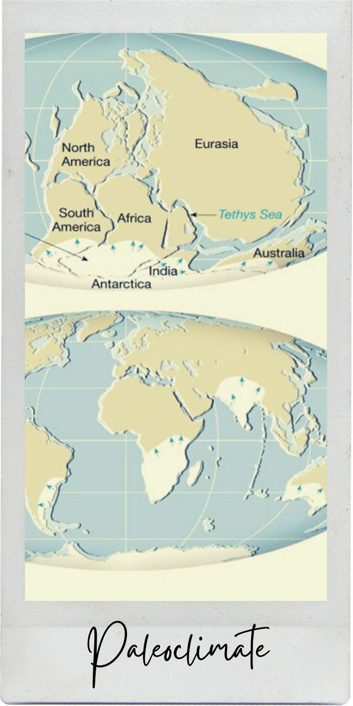
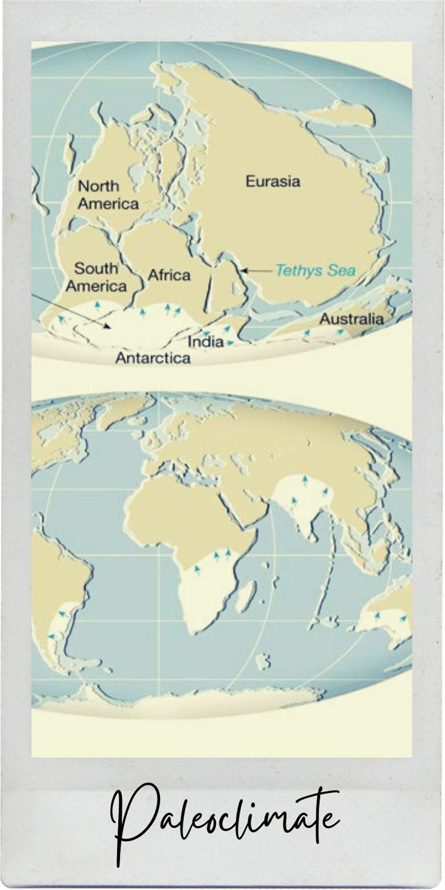

Exogenic
They are events caused by the movement of materials inside the Earth’s inner layers, driven from the Earth’s internal heat. Examples of exogenic processes include diastrophism/deformation, metamorphism, and magnetism.
Endogenic
These are events that occur on the Earth’s surface. They are affected by external factors like solar energy and other subsystems. Examples are weathering, deposition, sedimentation, and erosion.

Proposed in 1915 by Alfred Wagner. The theory states that the Earth's landmass was once a large supercontinent called Pangaea, which then split into Gondwanaland and Laurasia and later developed into new continents we know today.


 

 Formulated using SONAR, oceanic cartographer Marie Tharp created maps of underwater mountain ranges. It was proposed by Harry H. Hess in 1960 based on Tharp’s discovery. The theory states that new oceanic crust is formed due to the rising of hot, less dense material on the ocean floor.
Formulated using SONAR, oceanic cartographer Marie Tharp created maps of underwater mountain ranges. It was proposed by Harry H. Hess in 1960 based on Tharp’s discovery. The theory states that new oceanic crust is formed due to the rising of hot, less dense material on the ocean floor.